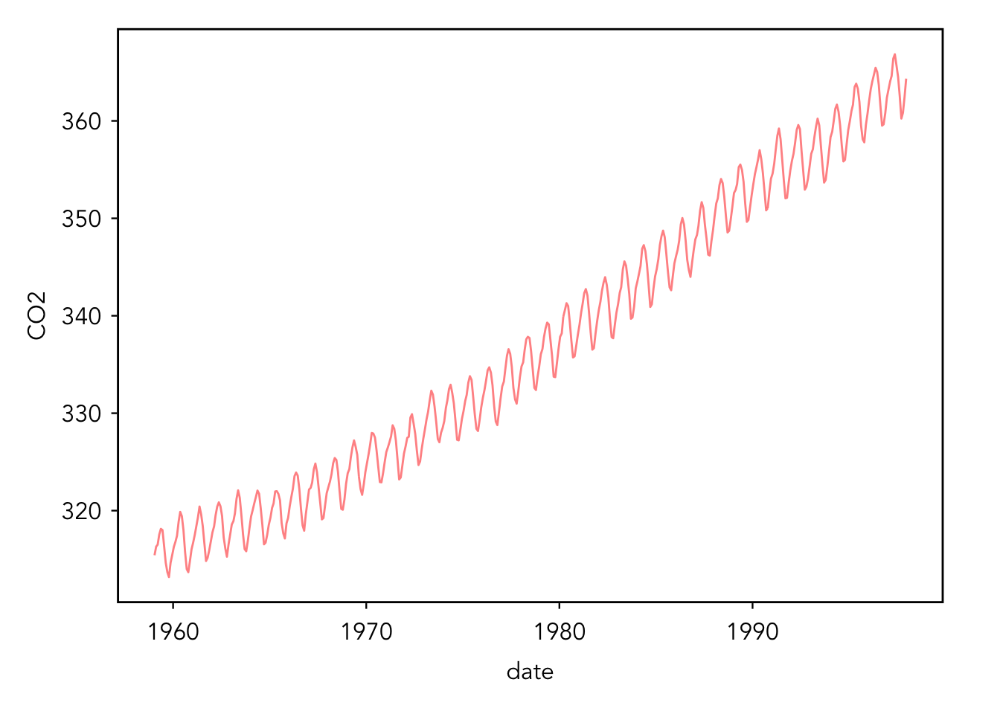

# load necessary packages - make sure you have these installed!
library(tidyverse)
library(rvest)
library(data.table)
# load Mauna Loa Atmospheric CO2 Concentration data
data(co2)
# convert to a data frame
co2 <-
data.frame(
CO2 = as.numeric(co2),
month = rep(month.abb, 39),
year = rep(1959:1997, each = 12)
)
# new column for date
co2 <- co2 %>% # create a date column and convert to date format
# we know the measurement is taken on the 15th
mutate(date = paste("15", month, year) %>%
as.Date(., format = "%d %b %Y")) Writing iterative code
- What is functional programming?
-
Definition here
For this tutorial, we will be working with the built-in data set co2. This is a simple data set of the monthly atmospheric CO2 concentrations at the Mauna Loa Observatory in Hawaii from 1959 to 1997.
To start, we need to load some packages and our data. As is, the data is in the form of a time series. We want to convert it to a data frame.
Let’s explore the data! Here are some easy ways to get a feel for your data.
head(co2) # view the first couple of rows of data CO2 month year date
1 315.42 Jan 1959 1959-01-15
2 316.31 Feb 1959 1959-02-15
3 316.50 Mar 1959 1959-03-15
4 317.56 Apr 1959 1959-04-15
5 318.13 May 1959 1959-05-15
6 318.00 Jun 1959 1959-06-15tail(co2) # view the last couple of rows of data CO2 month year date
463 364.52 Jul 1997 1997-07-15
464 362.57 Aug 1997 1997-08-15
465 360.24 Sep 1997 1997-09-15
466 360.83 Oct 1997 1997-10-15
467 362.49 Nov 1997 1997-11-15
468 364.34 Dec 1997 1997-12-15str(co2) # take a look at the classes of data'data.frame': 468 obs. of 4 variables:
$ CO2 : num 315 316 316 318 318 ...
$ month: chr "Jan" "Feb" "Mar" "Apr" ...
$ year : int 1959 1959 1959 1959 1959 1959 1959 1959 1959 1959 ...
$ date : Date, format: "1959-01-15" "1959-02-15" ...# make a line plot of the data
# note that your plot will probably look aesteically different than
# mine because I am using a base R inspired gg theme
ggplot(data = co2, aes(x = date, y = CO2)) +
geom_line(alpha = 0.5, color = "red")
Now this is all well and good, but what if we wanted to know what happens after 1997. After all, some of the people in this room were born after that date and we want to know what has happened in our lifetimes.
This statement may cause some contention in the room — proceed with caution gen-Zers.
Okay, let’s grab some data from the Scripps CO2 program. Because we are all hackers in the room, we are going to scrape data from the website programatically instead of downloading it and then importing it. We will write a function to do this for all of the sampling station locations we are interested in! Before we even think about writing a function, we want to make sure our code works for one site.
Navigate to the following website and pick your favorite sampling station: https://scrippsco2.ucsd.edu/data/atmospheric_co2/sampling_stations.html
For this example, I am going to pick our old friend the Mauna Loa Observatory, but I want you to pick a different one.
# URL of the website containing the .csv files
url <- "https://scrippsco2.ucsd.edu/data/atmospheric_co2/mlo.html"
# read the HTML content of the webpage
webpage <- read_html(url)
# find all links on the webpage
links <- webpage %>%
html_nodes("a") %>%
html_attr("href")
# filter links that point to CSV files then
# filter the links to only the file containing flask CO2 monthly readings
csv_links <- tibble(link = links) %>%
filter(str_detect(link, ".csv$"),
str_detect(link, "flask_co2/monthly"))
link2file <- csv_links[1]
# download and import CSV file into R
file_url <- paste0("https://scrippsco2.ucsd.edu", link2file)
filename <- basename(file_url)
download.file(file_url, destfile = filename, mode = "wb")
data1 <- read.csv(filename)
view(data1)Ack! There’s a bunch of junk at the top of the file. Let’s wrangle this sucker real fast. We know from viewing the file that the first column header is Yr so let’s just skip everything before that.
# skip everything until the `Yr` column
data <- fread(filename,
skip = "Yr", check.names = TRUE)
# remove downloaded files
file.remove(filename)
view(data)That looks much better. All that junk was metadata. I’ll copy it below, but if you don’t trust me, you can go back and view data1.
The data file below contains 10 columns. Columns 1-4 give the dates in several redundant formats. Column 5 below gives monthly Mauna Loa CO2 concentrations in micro-mol CO2 per mole (ppm), reported on the 2012 SIO manometric mole fraction scale. This is the standard version of the data most often sought. The monthly values have been adjusted to 24:00 hours on the 15th of each month. Column 6 gives the same data after a seasonal adjustment to remove the quasi-regular seasonal cycle. The adjustment involves subtracting from the data a 4-harmonic fit with a linear gain factor. Column 7 is a smoothed version of the data generated from a stiff cubic spline function plus 4-harmonic functions with linear gain. Column 8 is the same smoothed version with the seasonal cycle removed. Column 9 is identical to Column 5 except that the missing values from Column 5 have been filled with values from Column 7. Column 10 is identical to Column 6 except missing values have been filled with values from Column 8. Missing values are denoted by -99.99. Column 11 is the 3-digit sampling station identifier.
Alright. We know right off the bat that we are going to have to do some more wrangling here. I want to rename the columns to something that makes sense to me, then I want to delete the rows without data, then I want to replace missing values with NAs, and then I want to make the date column of class date.
# make a vector of new names
new_names <- c(
"year",
"month",
"date_excel",
"date",
"co2",
"co2_season_adj",
"co2_smooth",
"co2_smooth_season_adj",
"co2_interpolated",
"co2_season_adj_interpolated"
)
# replace old names
data <- data %>%
rename_with(~new_names, everything())
# delete rows with no data
data <- data %>% slice(-c(1:2))
# replace -99.99 or NaN with NAs
data <- data %>%
mutate_all(~ ifelse(.x == -99.99 | .x == "NaN", NA_real_, .x))
# reformat date column
data <- data %>%
mutate(date = as.Date(as.numeric(date_excel) - 1,
origin = "1899-12-30"))
view(data)Yay, that looks nice :). I think we are ready to start making our functions!